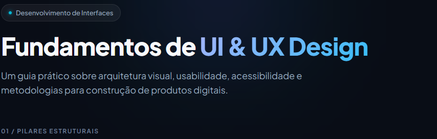
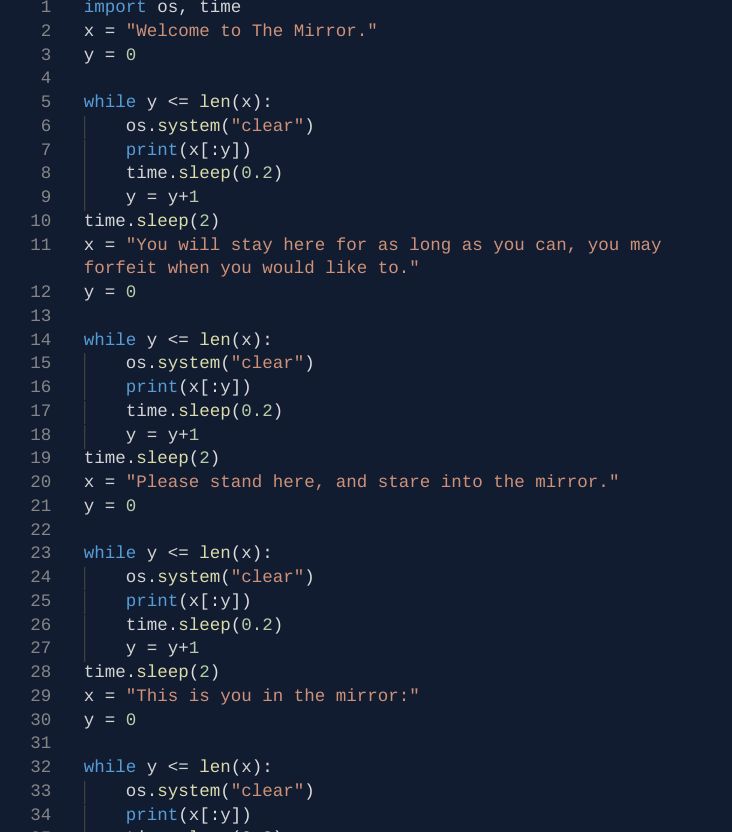
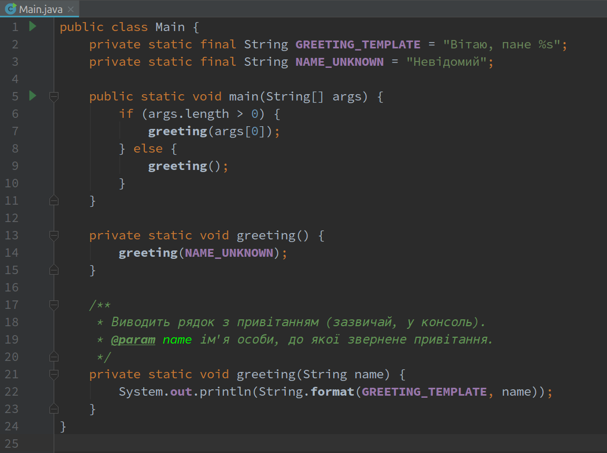
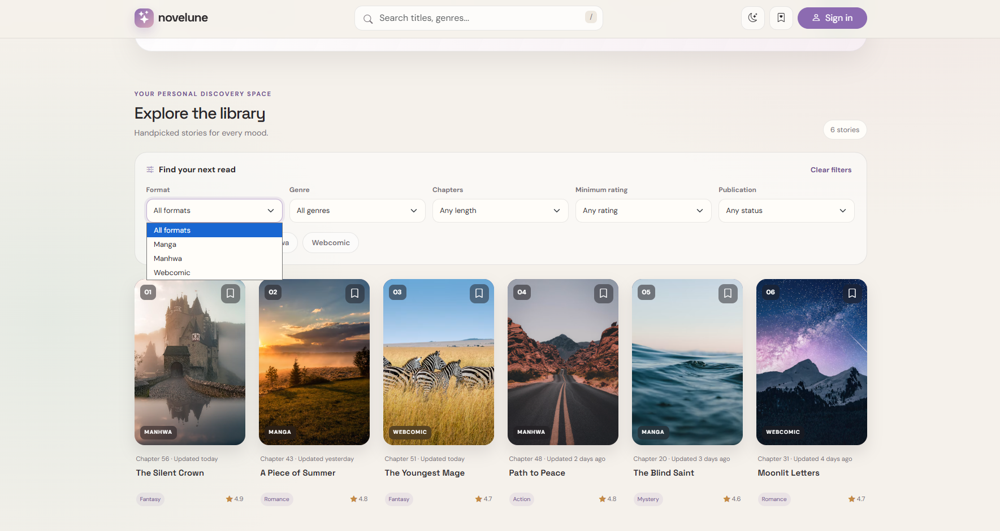

UX UI Concepts
Site acadêmico incluindo os principais conceitos de Design de Interfaces. Páginas Web autorais.
Ver projeto →Software Developer
Desenvolvo sistemas de elevado desempenho e realizo análise de dados para transformar informações estratégicas em aplicações robustas e prontas para produção. Bacharelando em Ciência da Computação com experiência em liderança de projetos.

Site acadêmico incluindo os principais conceitos de Design de Interfaces. Páginas Web autorais.
Ver projeto →
Aplicação web em Python focada em arquitetura em camadas, autenticação por papéis (RBAC) e gestão de ordens de serviço.
Ver projeto →
Coleção de aplicações práticas em Java demonstrando os pilares da Programação Orientada a Objetos, lógica de programação e lógica de sistemas.
Ver projeto →Estudo prático e comparativo para analisar a qualidade, estrutura e eficiência do código HTML, CSS e JavaScript gerado por diferentes modelos de Inteligência Artificial para uma mesma especificação de página web.
Ver projeto →
Construção de aplicação utilizando React funcional, com revisão e correção de arquitetura, composição, hooks e estilização.
Ver projeto →beatrizamaraleng@gmail.com · Brasília, DF